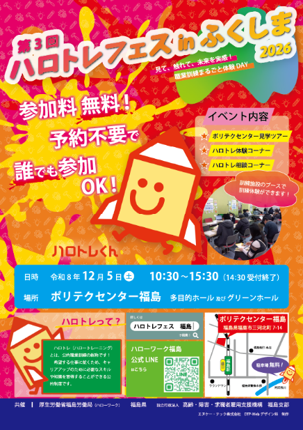
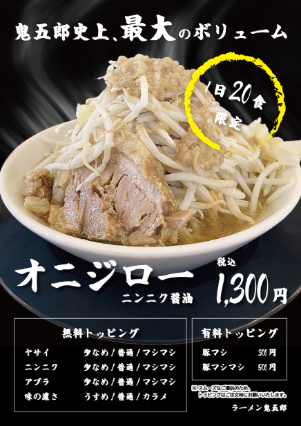
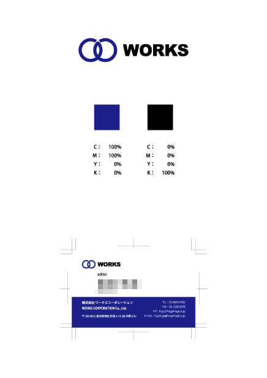

- 制作時間
- 10時間
- 制作ツール
- Adobe Illustrator, Adobe Photoshop
- ターゲット
- 県内に住む求職者およびその家族
- コンセプト
-
実在するイベントのチラシとして制作し、デザインコンペに応募した作品。
全体を彩度の高いビビッドな色調でまとめ、イベントの楽しさや活気が伝わる、目を引くデザインを目指した。暖色系の配色やインクのテクスチャ、傾けた文字配置によって、明るさとインパクトを演出している。
一方、日時や会場など、正確に読み取ってほしい情報には寒色を取り入れ、視覚的なメリハリをつけることで、印象の強さと情報の読みやすさを両立させた。
WORKS 作品一覧
- DTP
- Web
DTPDTP作品一覧
-
イベント「第3回 ハロトレフェス in ふくしま」チラシ

-
数量限定メニュー「オニジロー」卓上メニュー

- 制作時間
- 5時間
- 制作ツール
- Adobe Illustrator, Adobe Photoshop (生成拡張を使用)
- ターゲット
- 来店中の、ガッツリ食べたい若い男性
- コンセプト
-
架空のラーメン店「ラーメン鬼五郎」の数量限定メニューを紹介する、卓上メニューとして制作。
白い商品写真と黒い背景を組み合わせ、シンプルな色遣いで「挑戦者」を思わせるかっこよさを演出した。筆文字を取り入れることで、力強さや勢いを表現している。
また、素材写真にはなかった湯気を加え、熱々のラーメンを想像させるシズル感を演出した。文字のジャンプ率を意識し、メニュー名と価格がひと目で伝わるよう、情報にメリハリをつけている。
-
「株式会社 ワークスコーポレーション」ロゴ & 名刺デザイン

- 制作時間
- 7時間
- 制作ツール
- Adobe Illustrator, Adobe Photoshop
- ターゲット
- 取引先のビジネスパーソンやクライアントなど、幅広いビジネス関係者
- コンセプト
-
架空のデザイン会社「株式会社ワークスコーポレーション」のロゴおよび名刺を制作。
ロゴは、社名の頭文字である「W」を2つの円を組み合わせて表現し、人と人とのつながりを象徴するデザインとした。円を45度や60度といった角度で切り取ることで、数学的な規則性に基づく美しさを追求している。カラーには、落ち着きと信頼感を与えるCMYKブルーを採用した。
名刺はホワイトスペースを広く確保し、すっきりとした高級感のある紙面を目指した。黄金比を用いて紙面を縦方向に分割し、情報を整理して配置している。また、文字のジャンプ率を意識し、社員の名前が最も目立つようにメリハリをつけた。
WebWeb作品一覧
-
IK Design Portfolio
別タブで開く- 制作時間
- 30時間 (推定)
- 制作ツール
- Adobe XD, Adobe Dreamweaver
- ターゲット
- 企業の採用担当者
- コンセプト
-
自身のスキルや制作実績を紹介するポートフォリオサイトとして制作。
職業訓練で学んだHTML・CSS・JavaScriptの知識を活用し、サイトの構成から各種機能の実装まで、基本的に自分でコーディングを行った。実装で行き詰まった際にはChatGPTも活用し、解決策を検討しながら制作を進めた。
学んだ技術を実際のWebサイトとして形にすることを通じて、知識の定着を図るとともに、コーディングへの理解を深めることを目指した。
-
エヌケイ洋菓子店 トップページ
別タブで開く- 制作時間
- 99時間
- 制作ツール
- テキストテキストテキストテキストテキスト
- ターゲット
- テキストテキストテキストテキストテキストテキストテキストテキストテキストテキスト
- コンセプト
- テキストテキストテキストテキストテキストテキストテキストテキストテキストテキストテキストテキストテキストテキストテキストテキストテキストテキストテキストテキストテキストテキストテキストテキストテキストテキストテキストテキストテキストテキストテキストテキストテキストテキストテキストテキストテキストテキストテキストテキスト
-
ベーカリーヤマグチ Webサイト
別タブで開く- 制作時間
- 99時間
- 制作ツール
- テキストテキストテキストテキストテキスト
- ターゲット
- テキストテキストテキストテキストテキストテキストテキストテキストテキストテキスト
- コンセプト
- テキストテキストテキストテキストテキストテキストテキストテキストテキストテキストテキストテキストテキストテキストテキストテキストテキストテキストテキストテキストテキストテキストテキストテキストテキストテキストテキストテキストテキストテキストテキストテキストテキストテキストテキストテキストテキストテキストテキストテキスト